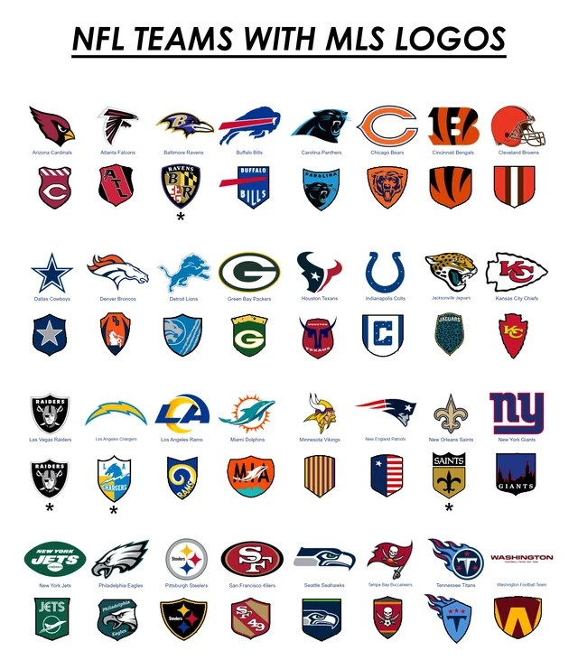

El área de equipos dentro de la National Football League es una de las más atractivas para los aficionados, ya que permite conocer la identidad, historia y logros de cada franquicia. La liga está compuesta por 32 equipos distribuidos en dos conferencias (AFC y NFC), y cada uno cuenta con su propia cultura, estadio y base de seguidores. Desde equipos históricos hasta franquicias más recientes, todos aportan algo único al espectáculo de la NFL.
Algunos equipos destacan por su legado y éxito a lo largo del tiempo. Por ejemplo, los Dallas Cowboys son conocidos como “El equipo de América” debido a su enorme popularidad, mientras que los Pittsburgh Steelers han sido una de las franquicias más ganadoras en la historia del Super Bowl. Por otro lado, equipos como los Kansas City Chiefs han dominado en años recientes gracias a su estilo de juego dinámico y jugadores estrella.
Además, cada equipo está conformado por plantillas de jugadores especializados en distintas posiciones, como mariscales de campo, corredores y receptores. Figuras como Patrick Mahomes han revolucionado el juego moderno con su talento y liderazgo, convirtiéndose en referentes para nuevas generaciones. Esta combinación de estrategia, talento individual y trabajo en equipo es lo que hace que cada franquicia tenga una identidad única dentro de la NFL referentes para nuevas generaciones. Esta combinación de estrategia, talento individual .
